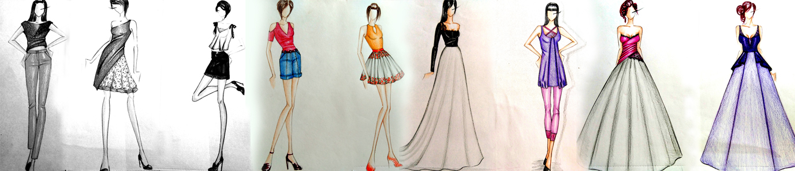
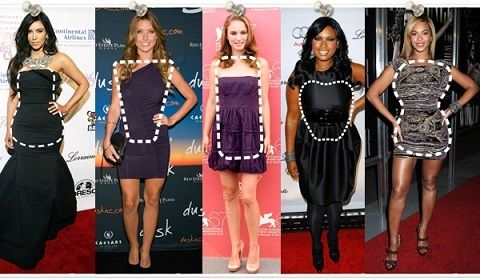

|  | |||
| KADIN VÜCUT TÝPLERÝ ☆Elma ☆Armut ☆Üçgen(Çilek) ☆Cetvel ☆Kum Saati |
Vücut Tipine Göre Giyinmenin ÖnemiBiz kadýnlar giyinmeyi özellikle de her renkte, desende ve modelde özgürce giyinmeyi delicesine severiz! Podyumda gördüðümüz modeller gibi olabilmeyi ya da bir moda çekiminden fýrlamýþçasýna kusursuz bir görünüme sahip olmayý isteriz. Oysaki her kadýnýn kendince kusurlu bulduðu, beðenmediði bir yaný vardýr, podyumdaki mankenlerin bile! Söz konusu bu kusurlar kapatýldýðýnda ya da iyi bir þekilde gizlendiðinde kendimizi daha seksi, daha güzel ve daha mutlu hissederiz. Ýþte þimdi bendeniz Matmazel kendinizi daha iyi, daha seksi ve daha güzel nasýl hissedebileceðiniz konusuna geliyorum. Aslýnda ‘kusur’ olarak adlandýrdýðýmýz bu olay vücut tipinizle oldukça alakalý. Vücudunuzu tanýmak ve ona göre giyinmek bahsedilen kusurlarý iyi bir þekilde gizleyebilmek bu iþin ana temasý. Peki ama nasýl yapacaðýz? Hadi hep birlikte vücudumuzu ve buna göre nasýl giyineceðimizi tanýyalým. |
||
| ERKEK VÜCUT TÝPLERÝ ☆Ektomorf ☆Mezomorf ☆Endomorf |
Vücut Yapýsýna Göre Giyim ÖnerileriErkek giyimi konusunda bazý püf noktalarý þunlardýr. Bir ortamda özellikle de kadýnlarýn ilgisini çekebilmek istiyorsanýz ve þýk olmak için uðraþýyorsanýz nasýl giyineceðinizi çok iyi bilmeniz gerekir. Bunun için de vücudunuzu iyi tanýmalýsýnýz. Erkekler için vücut tipine göre giyim önerileriAyriyeten kombin yapmanýn kadýn giyiminde oldukça önemli olduðunu tahmin edebilirsiniz. Eðer kilolu bir erkekseniz mutlaka sade bir giyim tercih etmenizi öneriyoruz. Asla renk kargaþasý yapmamalýsýnýz. Daha koyu düz renkler kullanmanýzý tavsiye edebiliriz. Günlük giyim için polo yaka tiþörtler kullanabilirsiniz. Kýsa boylu bir erkekseniz V yaka gömlek tercih edebilirsiniz. Uzun boylu bir erkek iseniz dikey çizgili gömlek ve tiþörtlerden uzak durmalýsýnýz. Ayakkabý, gömlek ve kravat gibi ürünleri sivri modelde seçmemeye özen göstermelisiniz. |
||